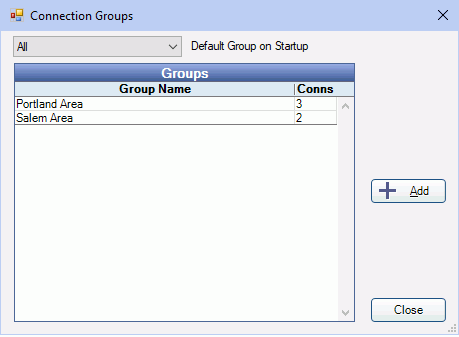

CEMT Connection Groups
In the Central Enterprise Management Tool ( CEMT ), click Setup, Groups.
Connection groups are useful to run reports for a certain grouping of database connections. From here, also set a default connection group.
Default Group on Startup: This group is the default group that shows when the CEMT is launched.
Click Add, or double-click an existing group to edit.

- Group Description: Enter an identifying name.
- Add: Click to add Available Connection highlighted in the list on the right to the Connections for this Group.
- Remove: Click to remove a highlighted connection from the group.
- Delete: Permanently delete the entire connection group.